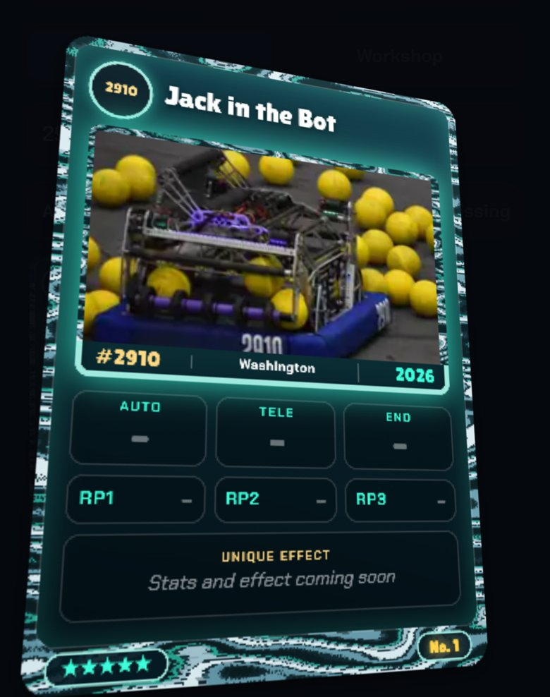

<title>WebGL Card Prototype</title>
<meta name="claude:viewport-fit-sides" content="cover">
<link rel="preconnect" href="https://fonts.googleapis.com">
<link rel="stylesheet" href="https://fonts.googleapis.com/css2?family=Lilita+One&family=Chakra+Petch:wght@500;600;700&display=swap">
<style>
/* Layout: one column, the card stage first, then the cost and the comparison. FRC Packs' own dark look, on purpose. */
:root {
  --bg: #0b0e17; --s1: #131826; --s2: #1a2133; --ln: #2a3450; --tx: #eef1f8; --dim: #8b94ab;
  --ac: #4fd8ff; --gold: #ffd36b; --myth: #3cffdc;
  --display: "Lilita One", "Arial Rounded MT Bold", system-ui, sans-serif;
  --body: "Chakra Petch", ui-sans-serif, system-ui, sans-serif;
  color-scheme: dark;
}
html, body { background: var(--bg); color: var(--tx); }
body { font: 500 15px/1.45 var(--body); padding-left: max(16px, env(safe-area-inset-left, 0px)); padding-right: max(16px, env(safe-area-inset-right, 0px)); padding-block: 18px 40px; }
main { max-width: 760px; margin: 0 auto; display: grid; gap: 22px; }
h1, h2 { font-family: var(--display); font-weight: 400; margin: 0; text-wrap: balance; }
h1 { font-size: clamp(28px, 7vw, 40px); line-height: 1.05; }
h2 { font-size: 22px; }
p { margin: 0; }
.dim { color: var(--dim); }
.top { display: grid; gap: 6px; }
.tag { justify-self: start; padding: 2px 9px; border-radius: 99px; background: var(--gold); color: #2a1c00; font: 700 11px var(--body); letter-spacing: .12em; text-transform: uppercase; }
.pick { display: flex; gap: 8px; flex-wrap: wrap; }
.pick button { min-height: 40px; padding: 0 14px; border: 0; border-radius: 999px; background: var(--s1); color: var(--dim); font: 700 14px var(--body); box-shadow: inset 0 0 0 1px var(--ln); cursor: pointer; }
.pick button[aria-pressed="true"] { color: var(--tx); box-shadow: inset 0 0 0 2px var(--ac); }
.pick button:focus-visible { outline: 3px solid var(--ac); outline-offset: 2px; }
.stage { position: relative; width: 100%; max-width: 420px; margin: 0 auto; aspect-ratio: 3 / 4; touch-action: none; cursor: grab; border-radius: 20px; background: radial-gradient(120% 80% at 50% 30%, #18213a, var(--bg) 70%); }
.stage:active { cursor: grabbing; }
.stage canvas { display: block; width: 100%; height: 100%; border-radius: 20px; }
.hint { position: absolute; left: 0; right: 0; bottom: 12px; text-align: center; color: var(--dim); font-size: 13px; pointer-events: none; }
.meter { display: flex; gap: 14px; flex-wrap: wrap; justify-content: center; font-size: 13px; color: var(--dim); font-variant-numeric: tabular-nums; }
.meter b { color: var(--tx); }
.cost { display: grid; gap: 10px; padding: 16px; border-radius: 16px; background: var(--s1); box-shadow: inset 0 0 0 1px var(--ln); }
.bars { display: grid; gap: 8px; }
.bar { display: grid; grid-template-columns: 9.5em 1fr 4.5em; align-items: center; gap: 10px; font-size: 13.5px; }
.bar i { display: block; height: 10px; border-radius: 5px; background: var(--c, var(--ac)); width: calc(var(--v) / 320 * 100%); min-width: 4px; }
.bar b { text-align: right; font-variant-numeric: tabular-nums; }
.vs { display: grid; grid-template-columns: 1fr 1fr; gap: 12px; }
.vs figure { margin: 0; display: grid; gap: 6px; }
.vs img, .vs canvas { width: 100%; max-width: 100%; border-radius: 14px; background: #05070d; aspect-ratio: 3 / 4; object-fit: contain; }
.vs figcaption { font-size: 13px; color: var(--dim); }
ul { margin: 0; padding-left: 20px; display: grid; gap: 6px; }
@media (max-width: 420px) { .bar { grid-template-columns: 7.5em 1fr 4em; font-size: 12.5px; } }
</style>

<main>
  <header class="top">
    <span class="tag">Prototype</span>
    <h1>The card, in WebGL</h1>
    <p class="dim">The same card art as the live site, drawn with Three.js: real perspective, a light that follows your finger, holographic foil on the Mythic and a gold sheen on the Rare. Hold and drag it. It springs back when you let go and never moves on its own.</p>
  </header>

  <div class="pick" role="group" aria-label="Card">
    <button type="button" id="pick-mythic" aria-pressed="true" data-card="mythic">Mythic · 2910 Jack in the Bot</button>
    <button type="button" id="pick-rare" aria-pressed="false" data-card="rare">Rare · 111 WildStang</button>
  </div>

  <div class="stage" id="stage" aria-label="The card: hold and drag to turn it">
    <p class="hint" id="hint">Hold and drag the card</p>
  </div>
  <div class="meter" aria-live="polite"><span>Last drag: <b id="fps">–</b></span><span id="gpu"></span></div>

  <section class="cost">
    <h2>What it costs</h2>
    <p class="dim">Extra JavaScript a phone downloads before it can show a card (gzipped, production build):</p>
    <div class="bars">
      <div class="bar"><span>Today, the whole app</span><i style="--v:51; --c:var(--myth)"></i><b>51 KB</b></div>
      <div class="bar"><span>+ Three.js (this page)</span><i style="--v:118; --c:var(--ac)"></i><b>+118 KB</b></div>
      <div class="bar"><span>+ React Three Fiber</span><i style="--v:269; --c:var(--gold)"></i><b>+269 KB</b></div>
    </div>
    <p class="dim">On a mid-range phone profile (CPU slowed 4×), today's CSS card renders a frame in about 6 ms while you drag it, well inside the 16.7 ms a 60 Hz screen allows. The WebGL card's numbers are in the repo README next to this prototype.</p>
  </section>

  <section class="cost">
    <h2>Side by side</h2>
    <div class="vs">
      <figure><figcaption>Today (CSS 3D)</figcaption></figure>
      <figure><canvas id="snap" width="390" height="520" aria-label="This WebGL card"></canvas><figcaption>This prototype (WebGL), same angle</figcaption></figure>
    </div>
  </section>

  <section class="cost">
    <h2>What WebGL adds</h2>
    <ul>
      <li>Foil that shifts colour with the angle, and glints that catch as you turn the card. CSS can fake a sheen, but not this.</li>
      <li>A real shadow under the card and true perspective at the edges.</li>
      <li>The card back is part of the same object, so flipping it is one smooth turn.</li>
    </ul>
    <p class="dim">The catch is the download, battery, and a second way to draw cards that the binder, trades and pack opening would all need.</p>
  </section>
</main>

<script src="https://cdn.jsdelivr.net/npm/three@0.160.0/build/three.min.js"></script>
<script>
(() => {
  const CARDS = {
    mythic: { face: "faces/2910.jpg", css: "shots/css-2910.jpg", tier: 1 },
    rare: { face: "faces/111.jpg", css: "shots/css-111.jpg", tier: 0 },
  };
  const ASPECT = 930 / 1302;
  const stage = document.getElementById("stage");
  const renderer = new THREE.WebGLRenderer({ antialias: true, alpha: true, preserveDrawingBuffer: true });
  renderer.setPixelRatio(Math.min(devicePixelRatio || 1, 2));
  renderer.outputColorSpace = THREE.SRGBColorSpace;
  stage.prepend(renderer.domElement);
  try {
    const gl = renderer.getContext(), ext = gl.getExtension("WEBGL_debug_renderer_info");
    document.getElementById("gpu").textContent = ext ? gl.getParameter(ext.UNMASKED_RENDERER_WEBGL).replace(/\s*\(.*$/, "").slice(0, 48) : "";
  } catch (e) { /* fine */ }

  const scene = new THREE.Scene();
  const camera = new THREE.PerspectiveCamera(30, 3 / 4, 0.1, 50);
  camera.position.set(0, 0, 8.6);

  const W = 2.5, H = W / ASPECT;
  const card = new THREE.Group();
  scene.add(card);

  // The face: the card art, rounded corners, a light that follows the tilt, and foil by rarity.
  const faceMat = new THREE.ShaderMaterial({
    transparent: true,
    uniforms: { map: { value: null }, tilt: { value: new THREE.Vector2() }, tier: { value: 1 }, aspect: { value: ASPECT } },
    vertexShader: `varying vec2 vUv; varying vec3 vN; varying vec3 vP;
      void main() { vUv = uv; vN = normalize(normalMatrix * normal); vec4 p = modelViewMatrix * vec4(position, 1.0); vP = p.xyz; gl_Position = projectionMatrix * p; }`,
    fragmentShader: `uniform sampler2D map; uniform vec2 tilt; uniform int tier; uniform float aspect;
      varying vec2 vUv; varying vec3 vN; varying vec3 vP;
      float box(vec2 p, vec2 b, float r) { vec2 q = abs(p) - b + r; return length(max(q, 0.0)) + min(max(q.x, q.y), 0.0) - r; }
      vec3 hue(float h) { return clamp(abs(mod(h * 6.0 + vec3(0.0, 4.0, 2.0), 6.0) - 3.0) - 1.0, 0.0, 1.0); }
      float hash(vec2 p) { return fract(sin(dot(p, vec2(127.1, 311.7))) * 43758.5453); }
      void main() {
        vec2 p = (vUv - 0.5) * vec2(aspect, 1.0);
        float d = box(p, vec2(aspect, 1.0) * 0.5, 0.035);
        if (d > 0.0) discard;
        vec3 c = texture2D(map, vUv).rgb;
        float lum = dot(c, vec3(0.299, 0.587, 0.114));
        // Where the light falls moves with the tilt, like the CSS card's --mx/--my.
        vec2 lp = vec2(0.5 + tilt.y * 0.55, 0.5 + tilt.x * 0.55);
        float spec = exp(-distance(vUv, lp) * distance(vUv, lp) * 9.0);
        // The frame: the outer border and the strip along the bottom.
        float edge = 1.0 - smoothstep(0.0, 0.03, min(min(vUv.x, 1.0 - vUv.x) * aspect, min(vUv.y, 1.0 - vUv.y)));
        float frame = max(edge, 1.0 - smoothstep(0.055, 0.075, vUv.y));
        vec3 col = c;
        if (tier == 1) {
          // Mythic: rainbow foil biased to teal, strongest on the frame and bright parts; glints on a fine grid that
          // only change as the card turns.
          float h = fract(dot(vUv, vec2(0.55, 0.85)) * 1.3 + tilt.y * 0.9 - tilt.x * 0.6);
          vec3 foil = mix(hue(h), vec3(0.24, 1.0, 0.86), 0.35);
          float m = (0.12 + 0.55 * frame + 0.25 * smoothstep(0.35, 0.9, lum)) * (0.45 + 0.9 * length(tilt));
          col = mix(col, col + foil * 0.65, clamp(m, 0.0, 0.85));
          vec2 gv = vUv * vec2(110.0, 154.0), f = fract(gv) - 0.5;
          float s = hash(floor(gv) + floor(tilt * 6.0));
          float glint = smoothstep(0.32, 0.0, length(f)) * step(0.975, s);
          col += vec3(0.85, 1.0, 0.97) * glint * frame * 1.3 * smoothstep(0.05, 0.3, length(tilt));
        } else {
          // Rare: one gold band that sweeps across as the card turns, on the frame and the bright parts.
          float band = exp(-pow((vUv.x + vUv.y) * 0.5 - (0.5 + tilt.y * 0.7 - tilt.x * 0.4), 2.0) * 90.0);
          col += vec3(1.0, 0.82, 0.42) * band * (0.25 + 0.6 * frame + 0.3 * lum) * (0.3 + length(tilt));
        }
        col += spec * 0.22 * (0.4 + length(tilt));
        float aa = smoothstep(0.0, -0.004, d);
        gl_FragColor = vec4(col, aa);
      }`,
  });
  const face = new THREE.Mesh(new THREE.PlaneGeometry(W, H), faceMat);
  card.add(face);

  // The back: constellation art, drawn once.
  const back = (() => {
    const cv = document.createElement("canvas"); cv.width = 620; cv.height = Math.round(620 / ASPECT);
    const x = cv.getContext("2d"), w = cv.width, h = cv.height;
    const g = x.createLinearGradient(0, 0, w, h); g.addColorStop(0, "#14306a"); g.addColorStop(1, "#070b18");
    x.fillStyle = g; x.fillRect(0, 0, w, h);
    let seed = 7; const rnd = () => (seed = (seed * 16807) % 2147483647) / 2147483647;
    for (let i = 0; i < 160; i++) { x.fillStyle = `rgba(200,230,255,${0.25 + rnd() * 0.6})`; x.beginPath(); x.arc(rnd() * w, rnd() * h, rnd() * 1.6 + 0.4, 0, 7); x.fill(); }
    const pts = [[0.22, 0.62], [0.33, 0.55], [0.45, 0.5], [0.55, 0.42], [0.66, 0.36], [0.77, 0.3], [0.72, 0.46]];
    x.strokeStyle = "rgba(220,240,255,.7)"; x.lineWidth = 2; x.beginPath();
    pts.forEach(([a, b], i) => (i ? x.lineTo(a * w, b * h) : x.moveTo(a * w, b * h))); x.stroke();
    for (const [a, b] of pts) { x.fillStyle = "#fff"; x.beginPath(); x.arc(a * w, b * h, 7, 0, 7); x.fill(); }
    x.fillStyle = "#eef1f8"; x.font = `${Math.round(w * 0.11)}px "Lilita One", sans-serif`; x.textAlign = "center"; x.fillText("FRC Packs", w / 2, h * 0.84);
    return new THREE.CanvasTexture(cv);
  })();
  const backMat = faceMat.clone();
  backMat.uniforms.map.value = back; backMat.uniforms.tier.value = 2;
  const backMesh = new THREE.Mesh(new THREE.PlaneGeometry(W, H), backMat);
  backMesh.rotation.y = Math.PI; backMesh.position.z = -0.01;
  card.add(backMesh);

  // A soft shadow under the card that moves opposite the tilt.
  const sh = (() => {
    const cv = document.createElement("canvas"); cv.width = cv.height = 128;
    const x = cv.getContext("2d"), g = x.createRadialGradient(64, 64, 4, 64, 64, 64);
    g.addColorStop(0, "rgba(0,0,0,.55)"); g.addColorStop(1, "rgba(0,0,0,0)"); x.fillStyle = g; x.fillRect(0, 0, 128, 128);
    return new THREE.Mesh(new THREE.PlaneGeometry(W * 1.5, H * 1.25), new THREE.MeshBasicMaterial({ map: new THREE.CanvasTexture(cv), transparent: true, depthWrite: false }));
  })();
  sh.position.z = -0.9; scene.add(sh);

  const loader = new THREE.TextureLoader();
  let current = "mythic";
  function show(name) {
    current = name;
    const c = CARDS[name];
    loader.load(c.face, (t) => { t.anisotropy = 8; faceMat.uniforms.map.value = t; faceMat.uniforms.tier.value = c.tier; draw(); snapshot(); });
    document.getElementById("css-shot").src = c.css;
    for (const b of document.querySelectorAll(".pick button")) b.setAttribute("aria-pressed", String(b.dataset.card === name));
  }

  function resize() {
    const r = stage.getBoundingClientRect();
    renderer.setSize(r.width, r.height, false);
    camera.aspect = r.width / r.height; camera.updateProjectionMatrix();
    draw();
  }

  // The same feel as the site's card (ui.tsx useGrabTilt): 20 degrees at most, 0.3 degrees per pixel, and a spring.
  const MAX = 20, GAIN = 0.3, rad = Math.PI / 180;
  const g = { held: false, id: 0, rx: 0, ry: 0, rawX: 0, rawY: 0, vx: 0, vy: 0, lx: 0, ly: 0, lt: 0, raf: 0 };
  const soft = (v) => MAX * Math.tanh(v / MAX);
  function draw(rx = g.rx, ry = g.ry) {
    card.rotation.set(rx * rad, ry * rad, 0);
    faceMat.uniforms.tilt.value.set(rx / MAX, ry / MAX);
    backMat.uniforms.tilt.value.set(rx / MAX, ry / MAX);
    sh.position.set(-ry * 0.02, rx * 0.02 - 0.15, -0.9);
    renderer.render(scene, camera);
  }
  // Frame times while the card is moving, shown after each drag.
  let times = [], lastT = 0;
  function frame(now) { if (lastT) times.push(now - lastT); lastT = now; }
  function report() {
    if (times.length < 10) return;
    const s = times.slice(3).sort((a, b) => a - b), avg = s.reduce((a, b) => a + b, 0) / s.length;
    document.getElementById("fps").textContent = `${Math.round(1000 / avg)} fps, slowest 5% ${s[Math.floor(s.length * 0.95)].toFixed(1)} ms`;
    window.__drag = { fps: 1000 / avg, p95: s[Math.floor(s.length * 0.95)], frames: s.length };
    times = []; lastT = 0;
  }
  function spring() {
    cancelAnimationFrame(g.raf);
    let last = performance.now();
    const step = (now) => {
      frame(now);
      const dt = Math.min(0.032, (now - last) / 1000); last = now;
      g.vx += (-170 * g.rx - 15 * g.vx) * dt; g.vy += (-170 * g.ry - 15 * g.vy) * dt;
      g.rx += g.vx * dt; g.ry += g.vy * dt; g.rawX = g.rx; g.rawY = g.ry;
      draw();
      if (Math.abs(g.rx) + Math.abs(g.ry) + Math.abs(g.vx) + Math.abs(g.vy) > 0.06) g.raf = requestAnimationFrame(step);
      else { g.rx = g.ry = g.vx = g.vy = g.rawX = g.rawY = 0; draw(); report(); }
    };
    g.raf = requestAnimationFrame(step);
  }
  let pending = false;
  stage.addEventListener("pointerdown", (e) => {
    if (e.pointerType === "mouse" && e.button) return;
    g.held = true; g.id = e.pointerId; g.lx = e.clientX; g.ly = e.clientY; g.lt = performance.now(); g.vx = g.vy = 0;
    cancelAnimationFrame(g.raf); times = []; lastT = 0;
    document.getElementById("hint").hidden = true;
    try { stage.setPointerCapture(e.pointerId); } catch (er) { /* fine */ }
  });
  stage.addEventListener("pointermove", (e) => {
    if (!g.held || e.pointerId !== g.id) return;
    const now = performance.now(), dx = e.clientX - g.lx, dy = e.clientY - g.ly;
    g.lx = e.clientX; g.ly = e.clientY;
    g.rawY += dx * GAIN; g.rawX += dy * GAIN;
    const ry = soft(g.rawY), rx = soft(g.rawX), dt = Math.max(8, now - g.lt) / 1000;
    g.lt = now; g.vy = (ry - g.ry) / dt; g.vx = (rx - g.rx) / dt; g.ry = ry; g.rx = rx;
    if (!pending) { pending = true; requestAnimationFrame((t) => { pending = false; frame(t); draw(); }); }
  });
  const up = (e) => { if (!g.held || e.pointerId !== g.id) return; g.held = false; spring(); };
  stage.addEventListener("pointerup", up);
  stage.addEventListener("pointercancel", up);
  stage.addEventListener("lostpointercapture", up);

  // The side-by-side: this card at the same angle as the CSS screenshot.
  function snapshot() {
    draw(-12.8, 17.5);
    const s = document.getElementById("snap"), x = s.getContext("2d"), src = renderer.domElement;
    x.fillStyle = "#05070d"; x.fillRect(0, 0, s.width, s.height);
    const k = Math.min(s.width / src.width, s.height / src.height);
    x.drawImage(src, (s.width - src.width * k) / 2, (s.height - src.height * k) / 2, src.width * k, src.height * k);
    draw();
  }
  window.__setTilt = (rx, ry) => draw(rx, ry);

  for (const b of document.querySelectorAll(".pick button")) b.addEventListener("click", () => show(b.dataset.card));
  addEventListener("resize", resize);
  resize();
  show("mythic");
})();
</script>
